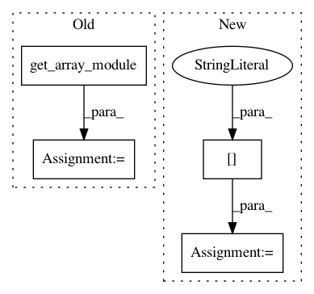

8060a6afa8c754d7914aac5e7655294758a8449f,tests/utils_tests/bbox_tests/test_non_maximum_suppression.py,TestNonMaximumSuppressionOptions,check_non_maximum_suppression_options,#TestNonMaximumSuppressionOptions#Any#Any#Any#Any#,82
Before Change
def check_non_maximum_suppression_options(
self, bbox, threshold, score, limit):
xp = cuda.get_array_module(bbox)
// Pass all options to the tested function
scored_selec = non_maximum_suppression(bbox, threshold, score, limit)
self.assertIsInstance(scored_selec, xp.ndarray)
After Change
order = cuda.to_cpu(score).argsort()[::-1]
reordered_selec = non_maximum_suppression(
bbox[order], threshold, score=None, limit=None)
reordered_selec = reordered_selec[:limit]
reordered_selec = cuda.to_cpu(reordered_selec)
reordered_selec = order[reordered_selec]
np.testing.assert_equal(
In pattern: SUPERPATTERN
Frequency: 3
Non-data size: 4
Instances
Project Name: chainer/chainercv
Commit Name: 8060a6afa8c754d7914aac5e7655294758a8449f
Time: 2017-05-07
Author: yuyuniitani@gmail.com
File Name: tests/utils_tests/bbox_tests/test_non_maximum_suppression.py
Class Name: TestNonMaximumSuppressionOptions
Method Name: check_non_maximum_suppression_options
Project Name: chainer/chainerrl
Commit Name: 88fd013c122905fbda18d9676074bc73e3e15030
Time: 2017-01-16
Author: muupan@gmail.com
File Name: chainerrl/agents/residual_dqn.py
Class Name: ResidualDQN
Method Name: _compute_y_and_t
Project Name: chainer/chainerrl
Commit Name: 7cebf32b75ef71ea8e367579c71fea84deaac91b
Time: 2017-01-15
Author: muupan@gmail.com
File Name: chainerrl/agents/dpp.py
Class Name: AbstractDPP
Method Name: _compute_y_and_t